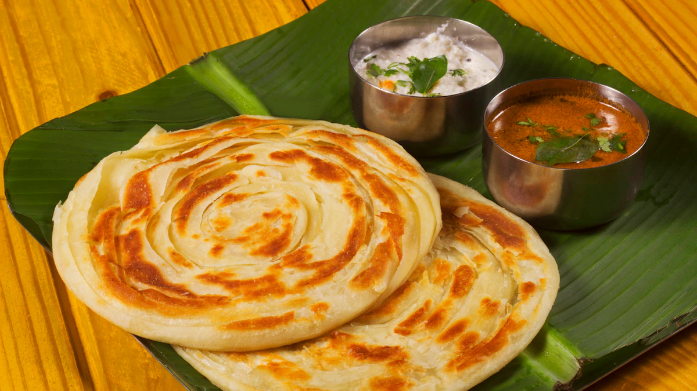

Indian cuisine is renowned for its rich diversity, vibrant flavors, and aromatic spices. It reflects the country's vast cultural heritage, regional traditions, and abundant agricultural resources. The variety in Indian food comes from its distinct regions, each offering unique dishes influenced by geography, climate, religion, and history.
biriyani
Biryani is a flavorful and aromatic rice dish that originated in the Indian subcontinent. It is made with fragrant basmati rice, spices, and either chicken, mutton.
Rajastan Thali
A Rajasthani Thali is a grand and flavorful platter that represents the rich and diverse cuisine of Rajasthan, India. It includes a variety of dishes, from spicy curries to sweet.
parotta
Parotta is a popular South Indian layered flatbread known for its flaky, crispy, and soft texture. It is made using refined flour (maida) and is kneaded with oil, water, and somethings.
TYPES OF BIRIYANI:
Hyderabadi Biryani – A famous version using marinated meat and cooked with layers of rice and spices.
Lucknowi (Awadhi) Biryani – More subtle in flavor, prepared by cooking the meat and rice separately and then layering them.
Kolkata Biryani – Has a mild flavor and includes potatoes, influenced by Mughal cuisine.
Malabar Biryani – A South Indian variant from Kerala, made with short-grain rice and ghee.
Sindhi Biryani – A spicy and tangy version from Pakistan, often with dried plums and potatoes.
Main Dishes:
Dal Baati Churma – The signature dish of Rajasthan; hard wheat rolls served with lentils and sweet crushed wheat.
Gatte ki Sabzi – Gram flour dumplings in a yogurt-based curry.
Ker Sangri – A unique dish made from dried desert beans and berries.
Panchmel Dal – A mix of five different lentils cooked with spices.
Laal Maas – A fiery mutton curry with red chilies.
Besan Kadhi – A gram flour-based yogurt curry.

Types of Parotta:
Malabar Parotta – A Kerala-style parotta, flaky and soft, often served with beef curry.
Ceylon Parotta – A thinner and crispier version, popular in Sri Lanka.
Coin Parotta – Mini-sized parottas, small and layered.
Bun Parotta – A thick and fluffy version, resembling a bun.
Kothu Parotta – Shredded parotta stir-fried with eggs, chicken, or vegetables and spices.
Egg Parotta – A parotta stuffed or coated with beaten egg while cooking.